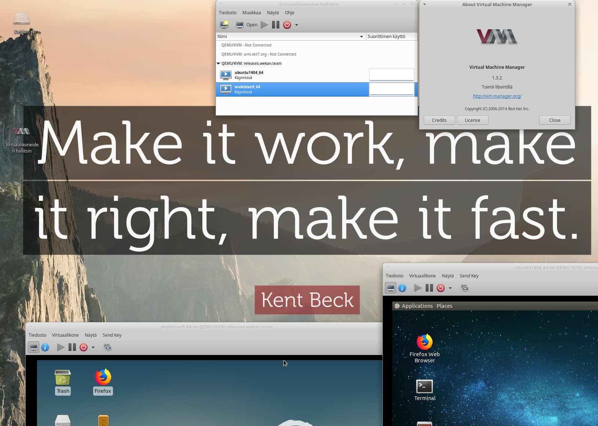
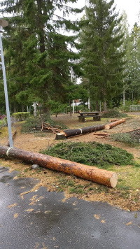

Are you in a hurry, or should we use computer to do the work ?
What I usually don’t spend my time with
Luckily I don’t usually install Windows and it’s updates. My friends at nerd club I lead are trying to install Windows 10 updates to Vista age 17″ laptops that have traditional harddisk (not SSD) and there is no budget yet to change to SSD. Updates takes many days, if they happen to work at all. Those laptops should be used at some courses to teach students. I don’t know why they can’t use Linux in that teaching.
Some months ago: Server debugging
Some months ago I had some crash/reboot problems with Wekan donated servers. After spending a lot of time debugging with support, the reason for crashing was that I did run LXDE desktop and VirtualBox on server, and they fight for some limited resources on server. I also was able to duplicate this same behaviour on my laptop. I was using x2go to connect to that desktop. The solution to that was that I would remove LXDE desktop and VirtualBox, and use libvirt-based virt-manager GUI desktop client. With it I can connect with remote desktop VNC to server though ssh connection to see VMs that are running at server.

I have not yet figured out how to build VirtualBox .ova files on the server yet, because I did not get VirtualBox running inside KVM/QEMU. Probably I would need to use https://packer.io or some other tool.
Building Snap packages on my laptop
Once upon time, snap build servers had bug so builds failed, and snapcraft had bug that had a fix at repo that was not yet released, so I figured out how to install snapcraft from source and build snap packages on my laptop. Those bugs have been fixed some time ago.
Answering GitHub issues
I do get email from every new GitHub issue and comment. I do like it, because my email filters organize incoming email neatly. Sometime there has been talk about making a bot that answers general questions, but there has not been so much duplicate questions yet. It’s very nice when also other Wekan contributors answer GitHub issues and send pull requests.

Day-to-day life, when there is no code related progress
- Some days it seems that coffee does not help enough to wake up, and I find it hard to concentrate. So then I need to sleep around the clock. This happens sometimes when I have been programming whole previous day intensively, or have walked a lot around the city at previous day.
- Shopping food etc too often take a whole day.
- Helping relatives and friends takes many days.
- Cleaning up often takes a whole day.
- I do like to listen singing of birds, days when sun is shining, days when it rains. Although, some days there is sound of chainsaw as can be seen from photo taken today – yes they did finally get permission to cut the trees at city where I live. Well, a year ago someone cut a iron bar at the parking lot with a circular saw, that was also nice.
Customer work
All of the above did slow down customer work, so I’m late in a project. I do already see that limiting original scope of project has helped to make schedule more realistic. Customer said to me, that because I have so much experience, I will figure it out. Because customer is so friendly and encouraging, I do my best to implement everything.
Day-to-day life, when I’m very productive
I have done remote work at home for many years. At some very productive day I did 7 releases of Wekan. At some other day I got one whole feature mostly done, “No comments” permission. Someone at chat commented that it would be very hard to do QA at that speed, wondering am I more of machine than human.
For me, there are still too many manual steps in the release process.
What my life would look like if I had full time work at office
At morning, I would spend time at traffic to I would go to early to office. Work there at office the whole day, at breaks drink Queal at office, and then go home, very tired. Shared office spaces are the worst, and it’s hard to concentrate with all the extra noise. Someone would ask something about unrelated work, so I would have to start debugging from the very beginning again. After work I would spend time at traffic to travel to home, and be very tired. Most likely I would not have enough time to rest and recover before next workday. Yes, I have done this for some days, when visiting company office, and staying at hotel.